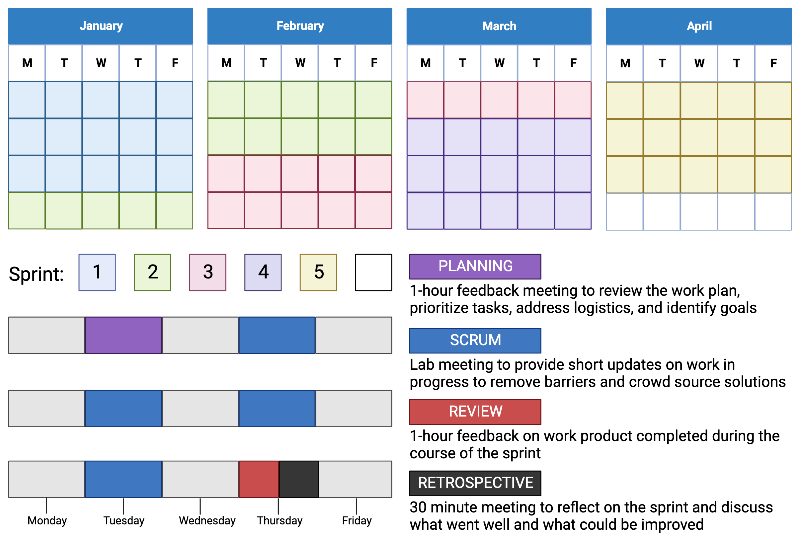

6 LabScrum
LabScrum adapts the Scrum framework from software development for research laboratories. It applies agile principles to scientific research to improve collaboration and streamline workflows. Research projects are divided into “sprints” with regular communication through stand-ups and retrospectives. This approach helps teams adapt to changes and work efficiently.
LabScrum sprint cycle
Our LabSrum framework is as follows. Every quarter, we identify key milestones. These encompass tasks with firm deadlines like grant applications, progress reports, conference abstracts, and presentations, as well as those with flexible deadlines, such as paper submissions. The quarter is divided into five sprints, each spanning three weeks, with an additional free week. Each sprint involves a planning meeting, four scrum meetings, a review, and a retrospective. Meetings are scheduled on Tuesdays and Thursdays.

This is our initial attempt at implementing LabScrum for project management, and we anticipate making revisions to better suit the lab’s needs
Sprint Planning
The objective of the planning meeting is to establish concrete, measurable sprint goals for each team member. Every member should arrive at the meeting with a preliminary sprint plan detailing their overarching goals and the associated subtasks to be accomplished by the sprint’s conclusion. This plan is then adjusted based on feedback regarding prioritization and logistics. The sprint goals should align with upcoming quarterly milestones, ensuring they contribute to the lab’s long-term research objectives. Employing SMART goals ensures the sprint goals are feasible within the sprint’s timeframe.
SMART Goals are Specific Measurable Achievable Relevant Time-Bound.
An example of a SMART-goal statement might look like this: Our goal is to [quantifiable objective] by [timeframe or deadline]. [Key players or teams] will accomplish this goal by [what steps you’ll take to achieve the goal]. Accomplishing this goal will [result or benefit].
Scrum meetings
Scrum meetings offer brief updates on each team member’s progress. They aim to collectively identify solutions to challenges and pinpoint colleagues who might help. While solutions might become evident during the scrum itself, sometimes a separate discussion with colleagues afterward is necessary. The format for updates isn’t rigid; it can be slides, a verbal summary, or even raw code. However, each update should tackle these three key questions:
- What tasks have you completed since our last meeting?
- What will you focus on next?
- Are there any obstacles hindering your progress?
Sprint Review
Upon concluding the sprint, we present the accomplishments of each team member and assess the progress against their initially set sprint goals. This presentation will utilize a slide deck format. It serves as a platform to receive in-depth feedback on the completed tasks, pinpoint challenges faced, prioritize upcoming tasks, and establish new objectives informed by the review and feedback.
Sprint Retrospective
The Sprint Retrospective is held after the sprint review to reflect on the past sprint and identify opportunities to enhance the effectiveness and enjoyment of future sprints. The goal is to foster a culture of continuous learning. By consistently evaluating our methods and results, we ensure that we’re continually adapting and evolving based on real-world feedback and experience. The key questions to address are:
- What went well in the last sprint?
- What could be improved?
- What will we commit to improving in the next sprint?
Beyond these central questions, the retrospective also serves as a venue to discuss any issues related to team dynamics, communication, or collaboration. It’s also a moment to recognize and appreciate the hard work and contributions of team members. It’s important to celebrate successes, both big and small!
Further reading
- May. 2019. LabScrum Guide
- Pirro. 2019. How agile project management can work for your research. Nature.
- Adam. 2019. A project-management tool from the tech industry could benefit your lab. Nature.
- Brauer. 2021. “I’ll Finish It This Week” And Other Lies. arxiv.
Finally, watch the YouTube video from our lab meeting where we initially discuss LabScrum for project management.